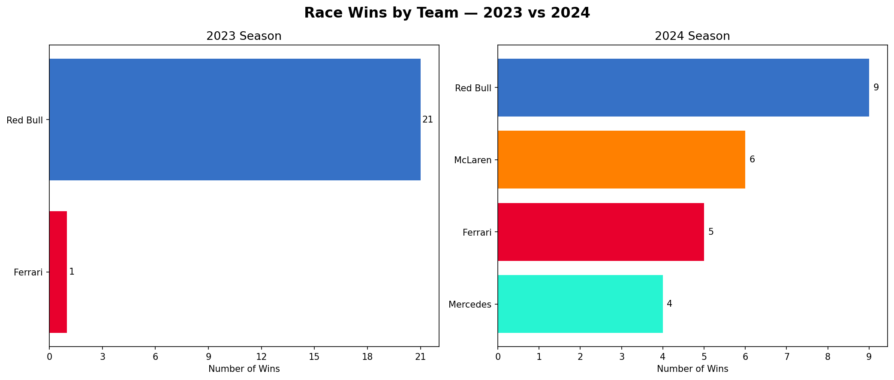
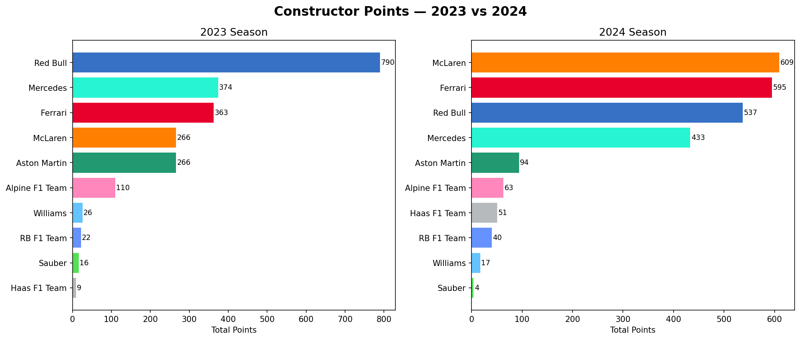
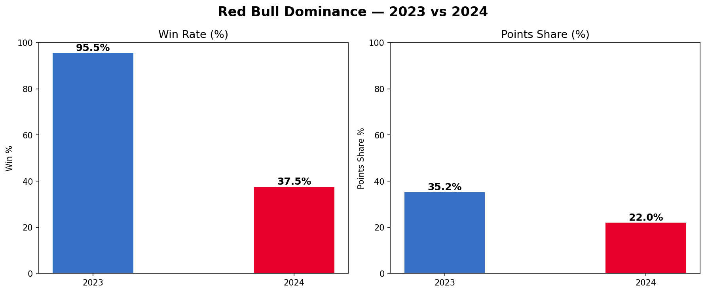
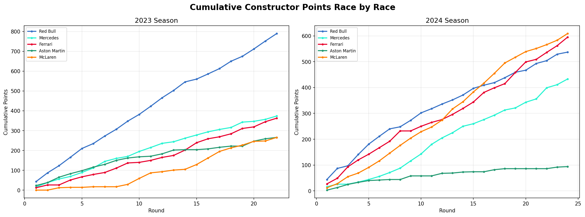
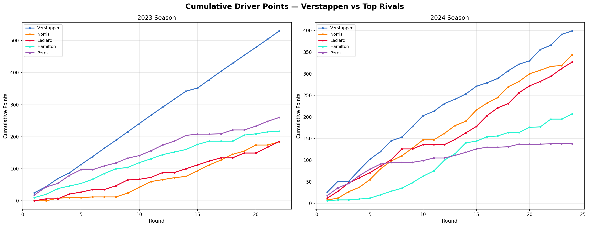
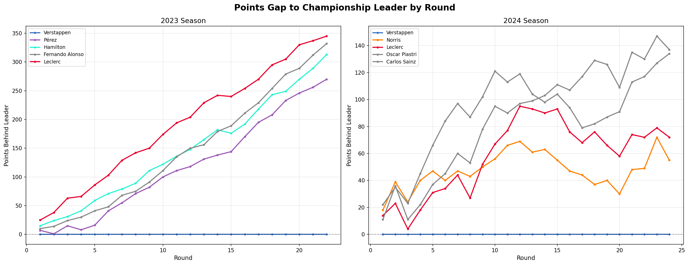
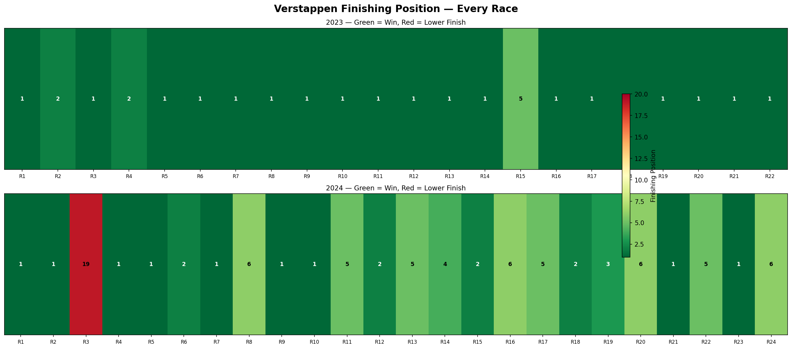
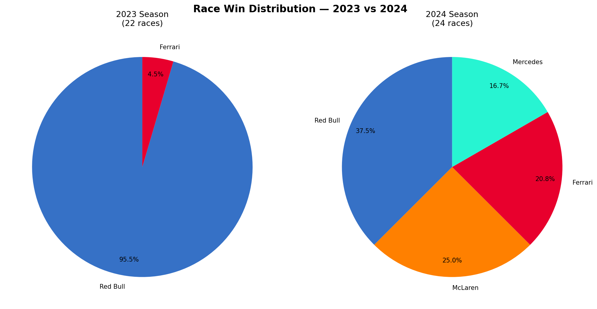
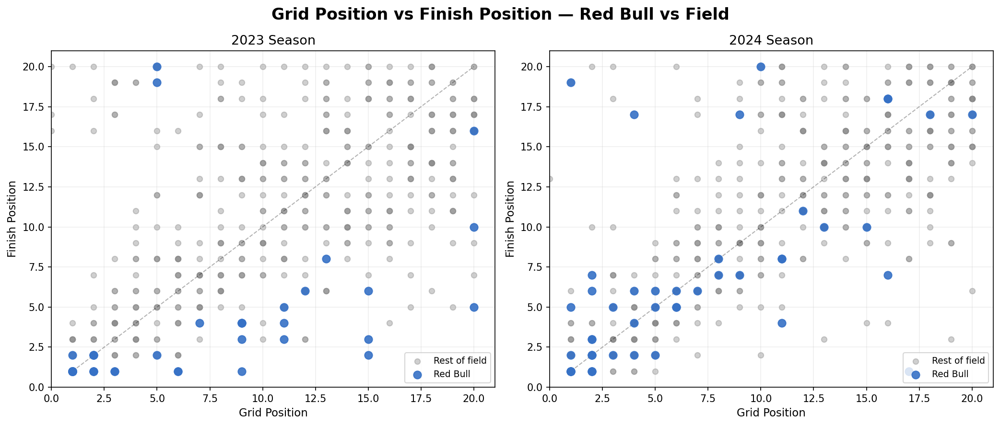
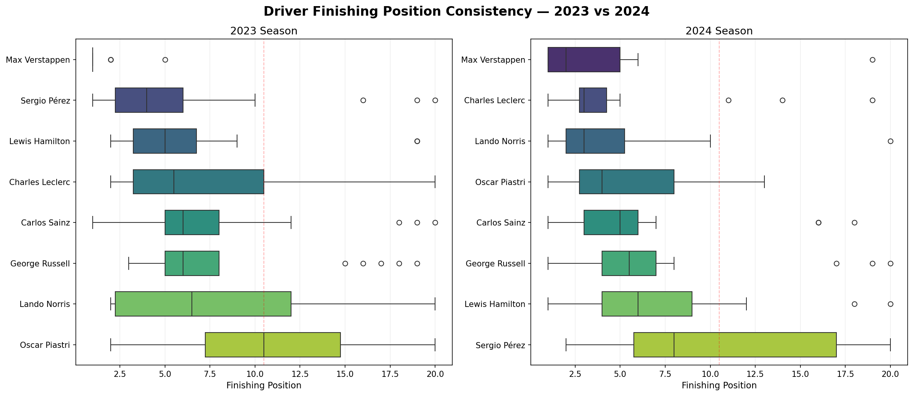

A complete end-to-end Python analytics project telling the story of Red Bull Racing's historic 2023 dominance and the emergence of a multi-team championship fight in 2024. Built with FastF1, Pandas, Matplotlib, and Seaborn across 46 races and 919 data points.
In this project I have covered two complete Formula 1 seasons — 2023 and 2024 — using race result data collected from the FastF1 API. The goal is to quantify Red Bull's dominance in 2023 and measure how the competitive landscape shifted in 2024.
Total Races Analysed
Data Points Collected
Unique Drivers
Visualizations Built
I followed a structured 5-phase workflow from raw API data to final insights to keep my analysis organized and my mind sane! Hover over each step to see exactly what I did.
FastF1 API
Pandas
New KPIs
Matplotlib · Seaborn
6 Deep-Dive Charts
I generated each of these charts using Python after full data cleaning and feature engineering. Click any chart to expand it.

In 2023 Red Bull won 21 of 22 races. In 2024 the wins got split across Red Bull, McLaren, Ferrari, and Mercedes. This showed that competitive balance was starting to return in F1.

Red Bull scored 790 points in 2023 — more than double of Mercedes who were in 2nd place. In 2024 they finished 3rd with 537, behind McLaren (609) and Ferrari (595).

Win rate dropped from 95.5% to 37.5%. Points share of the entire field dropped from 35.2% to 22%. This quantifies the sheer scale of the competitive swing.

In 2023 Red Bull's line shoots away from the field almost immediately. But in 2024 the top 4 teams track closely together for the entire season.

Verstappen's 2023 lead kept increasing relentlessly. But in 2024 Norris and Leclerc stayed within striking distance for much longer before Verstappen finally got ahead.

This shows how far Verstappen's rivals fell behind him after each round. The gap curves downward steeply in 2023 but in 2024 competitors stay comparatively nearer to 0 throughout.

A green/red heatmap of every race across both seasons. 2023 is almost entirely green. But 2024 shows more variation, including a DNF and several P4-P6 finishes.

The 2023 chart is almost completely Red Bull with a tiny Ferrari slice. The 2024 chart is split 4 ways. This simple visual is enough to tell the whole story of F1's shift.

Blue dots (Red Bull) are isolated in the bottom and mostly in the left in 2023 which means they always qualified and finished at the front. In 2024 they start mixing into the gray field.

Verstappen's box is the tightest and leftmost in 2023, and still leftmost in 2024. Pérez's box widens dramatically in 2024. This suggests that his inconsistent driving was a big reason why Red Bull lost the constructors title.
These are all the scripts that I used in this project — from data collection to advanced analysis. Click tabs to switch between files.
import fastf1 import pandas as pd import os import time # First I enable caching so that any session data is not redownloaded fastf1.Cache.enable_cache("cache") SEASONS = [2023, 2024] def load_session_safe(year, round_num, session_type): # Loaded each session safely. If there is a failure then instead of crashing the function retuns None try: session = fastf1.get_session(year, round_num, session_type) session.load() print(f" Loaded {year} Round {round_num}") return session except Exception as e: print(f" Failed {year} Round {round_num}: {e}") return None def extract_race_results(session, year, round_num): # Extracted the race results and added context columns try: results = session.results.copy() results['Year'] = year results['Round'] = round_num results['EventName'] = session.event['EventName'] results['Country'] = session.event['Country'] return results except Exception as e: print(f" Could not extract results: {e}") return None all_race_results = [] for year in SEASONS: schedule = fastf1.get_event_schedule(year, include_testing=False) total_rounds = len(schedule) print(f"\nSeason {year} — {total_rounds} rounds") for round_num in range(1, total_rounds + 1): backup_path = f"data/backups/{year}_round{round_num:02d}_results.csv" # If session data already downloaded then skip if os.path.exists(backup_path): print(f" Round {round_num} — already saved, skipping") continue race_session = load_session_safe(year, round_num, 'R') if race_session is not None: results = extract_race_results(race_session, year, round_num) if results is not None: all_race_results.append(results) results.to_csv(backup_path, index=False) print(f" Backup saved: {backup_path}") time.sleep(5) # Enabled a safety delay to avoid rate limits # Combined all rounds into a master CSV file if all_race_results: master = pd.concat(all_race_results, ignore_index=True) master.to_csv("data/raw/master_race_results.csv", index=False) print(f"Master results saved: {len(master)} rows")
import pandas as pd import numpy as np df = pd.read_csv("data/raw/master_race_results.csv") print(f"Raw shape: {df.shape}") # Dropped the columns that are completely null or irrelevant cols_to_drop = [ 'BroadcastName', 'TeamColor', 'HeadshotUrl', 'CountryCode', 'Q1', 'Q2', 'Q3', 'TeamId', 'DriverId' ] df = df.drop(columns=cols_to_drop) # Renamed all columns to follow snake_case convention df = df.rename(columns={ 'DriverNumber' : 'driver_number', 'Abbreviation' : 'driver_code', 'FirstName' : 'first_name', 'LastName' : 'last_name', 'FullName' : 'driver_name', 'TeamName' : 'team', 'Position' : 'finish_position', 'ClassifiedPosition': 'classified_position', 'GridPosition' : 'grid_position', 'Time' : 'race_time', 'Status' : 'status', 'Points' : 'points', 'Laps' : 'laps_completed', 'Year' : 'year', 'Round' : 'round', 'EventName' : 'race_name', 'Country' : 'country', }) # Fixed data types df['finish_position'] = pd.to_numeric(df['finish_position'], errors='coerce') df['grid_position'] = pd.to_numeric(df['grid_position'], errors='coerce') df['points'] = pd.to_numeric(df['points'], errors='coerce').fillna(0) df['year'] = df['year'].astype(int) df['round'] = df['round'].astype(int) # Standardized team names for both seasons team_name_map = { 'Alfa Romeo' : 'Sauber', 'AlphaTauri' : 'RB F1 Team', } df['team'] = df['team'].replace(team_name_map) # Made DNF counts more accurate by counting only mechanical/accident retirements DNF_STATUSES = ['Retired', 'Accident', 'Collision damage', 'Undertray', 'Withdrew'] DNS_STATUSES = ['Did not start'] df['dnf'] = df['status'].isin(DNF_STATUSES) df['dns'] = df['status'].isin(DNS_STATUSES) df['finished'] = ~df['dnf'] & ~df['dns'] df['is_redbull'] = df['team'] == 'Red Bull' df['positions_gained'] = df['grid_position'] - df['finish_position'] df['points_finish'] = df['points'] > 0 df.to_csv("data/cleaned/master_results_cleaned.csv", index=False) print(f"Cleaned data saved: {df.shape}")
import matplotlib matplotlib.use('Agg') # This saves charts without opening windows which makes the terminal run faster import pandas as pd import matplotlib.pyplot as plt import matplotlib.ticker as ticker import os df = pd.read_csv("data/cleaned/master_results_cleaned.csv") os.makedirs("outputs/charts", exist_ok=True) COLORS = { 'Red Bull' : '#3671C6', 'Ferrari' : '#E8002D', 'Mercedes' : '#27F4D2', 'McLaren' : '#FF8000', 'Aston Martin' : '#229971', 'Alpine F1 Team': '#FF87BC', 'Williams' : '#64C4FF', 'RB F1 Team' : '#6692FF', 'Haas F1 Team' : '#B6BABD', 'Sauber' : '#52E252', } # wins per team winners = df[df['finish_position'] == 1] wins_by_team = winners.groupby(['year', 'team']).size().reset_index(name='wins') fig, axes = plt.subplots(1, 2, figsize=(14, 6)) fig.suptitle('Race Wins by Team — 2023 vs 2024', fontsize=16, fontweight='bold') for i, year in enumerate([2023, 2024]): data = wins_by_team[wins_by_team['year'] == year].sort_values('wins', ascending=True) colors = [COLORS.get(t, '#888') for t in data['team']] axes[i].barh(data['team'], data['wins'], color=colors) axes[i].set_title(f'{year} Season') plt.tight_layout() plt.savefig('outputs/charts/01_wins_by_team.png', dpi=150, bbox_inches='tight') # constructor points team_points = df.groupby(['year', 'team'])['points'].sum().reset_index() # Red Bull dominance metrics rb_wins = df[(df['is_redbull']==True) & (df['finish_position']==1)].groupby('year').size() rb_points = df[df['is_redbull']==True].groupby('year')['points'].sum() ttl_points = df.groupby('year')['points'].sum() ttl_races = df.groupby('year')['round'].nunique() dominance = pd.DataFrame({ 'rb_wins' : rb_wins, 'rb_win_pct' : (rb_wins / ttl_races * 100).round(1), 'rb_points_share': (rb_points / ttl_points * 100).round(1), }).reset_index() # cumulative constructor points top_teams = team_points[team_points['year']==2023].nlargest(5, 'points')['team'].tolist() fig, axes = plt.subplots(1, 2, figsize=(16, 6)) for i, year in enumerate([2023, 2024]): year_df = df[df['year'] == year] for team in top_teams: rp = year_df[year_df['team']==team].groupby('round')['points'].sum().reset_index() rp['cumulative'] = rp['points'].cumsum() axes[i].plot(rp['round'], rp['cumulative'], color=COLORS.get(team, '#888'), label=team, linewidth=2) plt.tight_layout() plt.savefig('outputs/charts/04_cumulative_points.png', dpi=150, bbox_inches='tight')
import matplotlib matplotlib.use('Agg') import pandas as pd import matplotlib.pyplot as plt import seaborn as sns df = pd.read_csv("data/cleaned/master_results_cleaned.csv") DRIVER_COLORS = { 'VER': '#3671C6', 'NOR': '#FF8000', 'LEC': '#E8002D', 'HAM': '#27F4D2', 'PER': '#9B59B6' } # cumulative driver points — Verstappen vs rivals top_drivers = ['VER', 'NOR', 'LEC', 'HAM', 'PER'] fig, axes = plt.subplots(1, 2, figsize=(18, 7)) for i, year in enumerate([2023, 2024]): year_df = df[df['year'] == year] for drv in top_drivers: drv_df = year_df[year_df['driver_code'] == drv].sort_values('round') if len(drv_df) == 0: continue drv_df = drv_df.copy() drv_df['cumulative_pts'] = drv_df['points'].cumsum() axes[i].plot(drv_df['round'], drv_df['cumulative_pts'], marker='o', markersize=3, linewidth=2, color=DRIVER_COLORS[drv], label=drv) plt.savefig('outputs/charts/05_driver_points_race_by_race.png', dpi=150) # Verstappen heatmap fig, axes = plt.subplots(2, 1, figsize=(18, 8)) for i, year in enumerate([2023, 2024]): ver_df = df[(df['driver_code']=='VER') & (df['year']==year)].sort_values('round') positions = ver_df['finish_position'].values.reshape(1, -1) axes[i].imshow(positions, cmap='RdYlGn_r', aspect='auto', vmin=1, vmax=20) for j, pos in enumerate(ver_df['finish_position'].values): axes[i].text(j, 0, str(int(pos)), ha='center', va='center', fontsize=9, fontweight='bold') plt.savefig('outputs/charts/07_verstappen_positions_heatmap.png', dpi=150) # grid vs finish scatter ── fig, axes = plt.subplots(1, 2, figsize=(14, 6)) for i, year in enumerate([2023, 2024]): year_df = df[df['year']==year].dropna(subset=['grid_position', 'finish_position']) rb = year_df[year_df['is_redbull']==True] rest = year_df[year_df['is_redbull']==False] axes[i].scatter(rest['grid_position'], rest['finish_position'], alpha=0.4, color='#888', s=30, label='Rest of field') axes[i].scatter(rb['grid_position'], rb['finish_position'], alpha=0.9, color='#3671C6', s=60, label='Red Bull', zorder=5) axes[i].plot([1, 20], [1, 20], 'k--', alpha=0.3) plt.savefig('outputs/charts/09_grid_vs_finish.png', dpi=150) # driver consistency boxplot top_drivers_full = [ 'Max Verstappen', 'Lando Norris', 'Charles Leclerc', 'Carlos Sainz', 'Lewis Hamilton', 'George Russell', 'Sergio Pérez', 'Oscar Piastri' ] fig, axes = plt.subplots(1, 2, figsize=(16, 7)) for i, year in enumerate([2023, 2024]): year_df = df[(df['year']==year) & (df['driver_name'].isin(top_drivers_full))] order = year_df.groupby('driver_name')['finish_position'].median().sort_values().index sns.boxplot(data=year_df, x='finish_position', y='driver_name', order=order, ax=axes[i], palette='viridis') axes[i].axvline(x=10.5, color='red', linestyle='--', alpha=0.3) plt.savefig('outputs/charts/10_driver_consistency.png', dpi=150)
I managed to extract 6 major insights from the 2023 and 2024 Formula 1 race datasets.
Red Bull's 2023 campaign is statistically one of the most dominant campaigns ever in F1 history. Winning 21 of 22 races with a 95.5% win rate and claiming 35.2% of all points scored by every team combined. No other constructor came close.
21/22 wins · 790 pts · 35.2% shareMcLaren went from equal 5th in 2023 (266 points, matching Aston Martin) to constructors' champions in 2024 with 609 points. This is the biggest single-season points jump of any team in the field.
266 pts in 2023 → 609 pts in 2024Inspite of being in a significantly slower car in 2024, Verstappen still won the drivers' championship (his 4th consecutive title). His average finish dropped from 1.27 to 3.63 but he still defeated all his rivals through consistency and race craft.
Avg finish: 1.27 → 3.63 · Still championSergio Pérez scored 260 points in 2023 as a strong number 2 driver. But in 2024 he dropped to 138 which was a 47% reduction. His wide finishing position boxplot shows how inconsistent he was and that directly cost Red Bull the constructors championship in 2024.
260 pts → 138 pts · –47%McLaren completed 2024 with absolutely no DNFs. Both McLarens finished every single race they started. Combined with their pace advantage in the second half of the season, this reliability was critical to their constructors title win.
0 DNFs across 48 race starts in 2024Red Bull's points share fell from 35.2% to 22% of all points scored across the field. 4 different teams won races in 2024 compared to just 2 in 2023. Formula 1 went from a one-team show to its most competitive season in years.
4 race-winning teams in 2024 vs 2 in 2023These are all the tools that I used across the full analytics pipeline.
Core language for all data processing and analysis
Official F1 API wrapper for race data collection
Data cleaning, transformation, and aggregation
Primary charting library for all visualizations
Statistical charts — boxplots and distribution plots
Numerical operations and array handling
Backup strategy for every race to handle API rate limits
DNF flags, positions gained, points share KPIs
Here's myself — the analyst behind the project — background, skills, and other work.
I'm a Computer Science & Engineering student at the Institute of Engineering and Management, Kolkata. I am actively building a career in data and business analytics. I have hands-on experience in data cleaning, visualization, and business insight generation using Excel, Power BI, MySQL, and Python. I have also been writing content professionally for over 2 years now that has helped strengthen my communication skills, analytical thinking, and ability to turn complex data into clear narratives.
Analyzed 640K+ row UCI Online Retail II dataset using MySQL. RFM customer segmentation, month-over-month revenue trend analysis using CTEs, window functions, and stored procedures.
Built a 1-page interactive Power BI report on a 3,000-row addiction and health dataset. Covered demographics, addiction behavior, lifestyle factors, and therapy outcomes using DAX measures.
Cleaned 3,000+ row dataset using MySQL — removed 300+ duplicates, resolved 98% nulls, and standardized fields using CTEs, temp tables, and complex join queries.